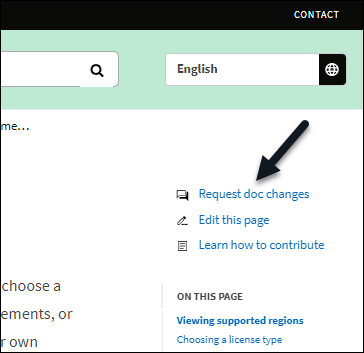
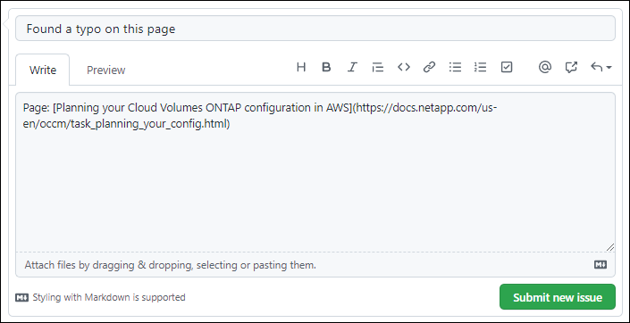
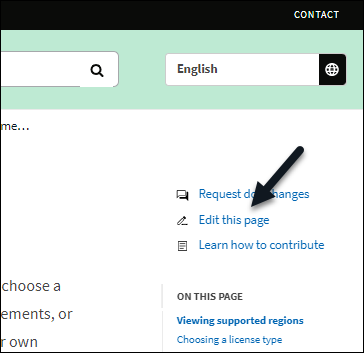
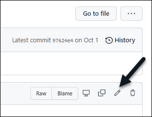
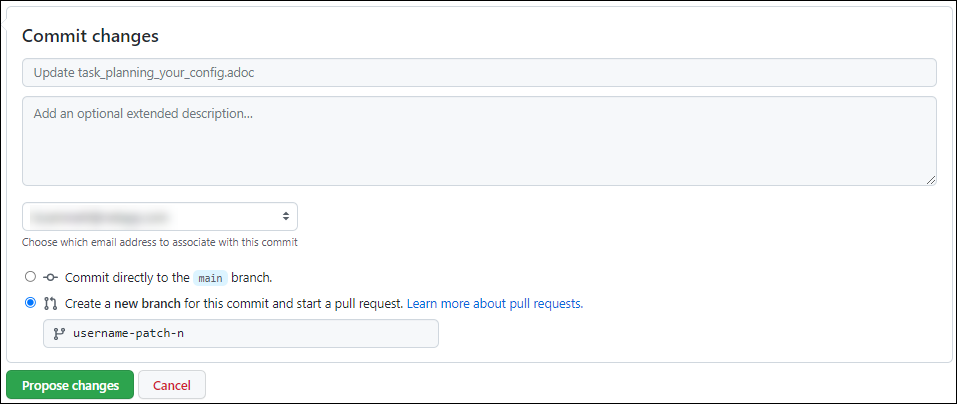
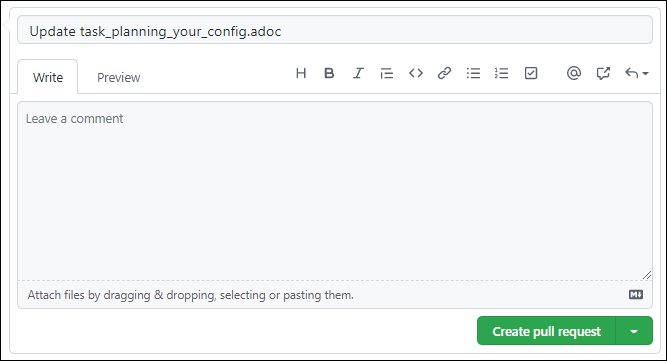

Contribute to NetApp technical content in GitHub
Contributors
The documentation for NetApp’s products and services is open source. This enables you to contribute to the content by making improvements, corrections, and suggestions. All you need is a GitHub account and a little initiative.
Overview
You can contribute to our docs by using the following options:
-
Click Request doc changes to submit general feedback or to ask a question about the content. The NetApp content lead then reviews your request to determine what changes are needed to the docs. This is the most common option.
-
Click Edit this page to directly edit the content yourself. The NetApp content lead then reviews your edits and merges them.
Request doc changes
Submitting a request for a doc change is the most common way to contribute to NetApp docs. After you submit the request, the content lead will confirm that they’ve received your feedback. You’ll get an email notification from GitHub when they do.
If the content lead agrees that your suggestion can make the content better, they will commit the change shortly after that. You’ll receive another notification that your feedback was incorporated.

|
All comments that you provide are publicly visible. Anyone who navigates to the issues in the GitHub repo can see your comments. |
-
If you don’t already have a GitHub account, create one from github.com.
-
Log in to your GitHub account.
-
Using your web browser, open the page on docs.netapp.com that’s related to your feedback.
-
On the right side of the page, click Request doc changes.

A new browser tab opens with a form that you can use to provide details to our doc team.
-
Enter a title and then provide details about your request.
The comment field is prepopulated with the title and URL for the page. Don’t delete this information because we’ll need it to understand your request.

-
Click Submit new issue to create an issue for your request.
Opening an issue enables collaboration through GitHub comments. You’ll receive email notifications based on the preferences that you indicated in your GitHub account settings.
You can also view the status of the request by clicking Issues on the top banner next to the GitHub search box:
Submit edits to the docs
If you’re comfortable editing the content yourself, you can submit the exact doc changes that you’d like to see by directly editing the source file.
As an outside contributor, you won’t be able to publish the change directly. The content lead will review the changes, make any required edits, and then merge the changes. You’ll get an email notification from GitHub when this happens.
If you need help with our writing style or source syntax, you can use these resources:
-
If you don’t already have a GitHub account, create one from github.com.
-
Log in to your GitHub account.
-
Using your web browser, open the page on docs.netapp.com that you want to edit.
-
On the right side of the page, click Edit this page.

-
Click the pencil icon.

-
Edit the content.
The content is written in AsciiDoc, a lightweight markup language. If you need help, click here to learn about AsciiDoc syntax.
-
To commit your changes, scroll down the page and fill out the form:
-
Enter a title and optional description.
-
Select Create a new branch for this commit and start a pull request.
-
Click Propose changes.
GitHub automatically fills in a branch name (for example, username-patch-n) for the change.

-
-
Provide a comment about the edit that you made, then click Create pull request.

After you propose the changes, we’ll review them, make any necessary edits, and then merge the changes into the GitHub repository.
You can view the status of the pull request by clicking Pull requests on the top banner next to the GitHub search box:
 Request doc changes
Request doc changes Edit this page
Edit this page Learn how to contribute
Learn how to contribute